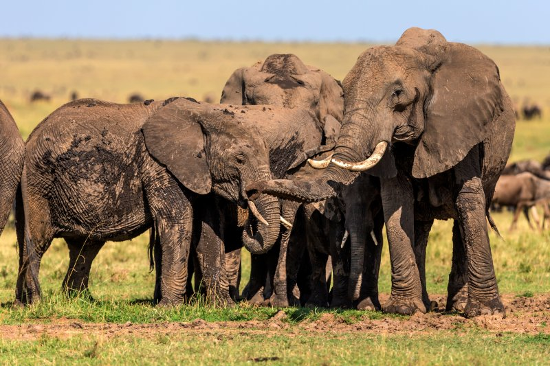
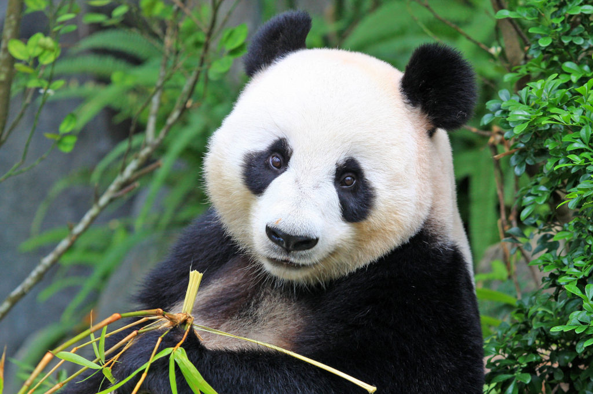

Wildlife conservation is the preservation and protection of animals, plants and their habitats. By conserving wildlife we are making sure that future generations will be able to enjoy the natural world and all of the incredible species that live within it. To help protect wildlife it is important to understand how species interact within their eco sysytems and how they are affected by environmental and human influences. Conservation goals include:
The purpose of this website is to highlight the need to protect the earth in its entirety from the top of mount everest to the bottom of the ocean and everything inbetween. The definition of Conservation is the act of trying to protect of preserve something or the limiting of how much of any given resource that you use, the importance of conservation should not be underestimated, As the act of Conservation ensures that future generations can enjoy the natural world in all its beauty and the incredible wildlife that call it home.
 The human population has grown exponentially over the past 200 years, to over 7 billion people, this means that more natural resources are being used and being used faster. This growth in population also means that people need more space to live often endangering the animals and the habitats in which they live, especially the plants and animals that may be dislaced so that people can use the land for farming or other develpoments.Other threats include the introduction of invasive species which can be devastating to the species already in that area.